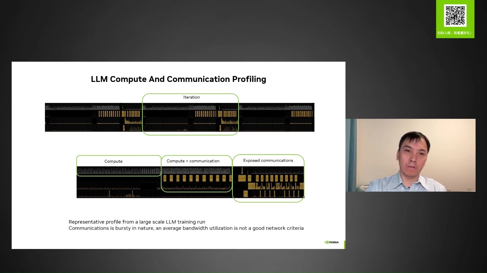
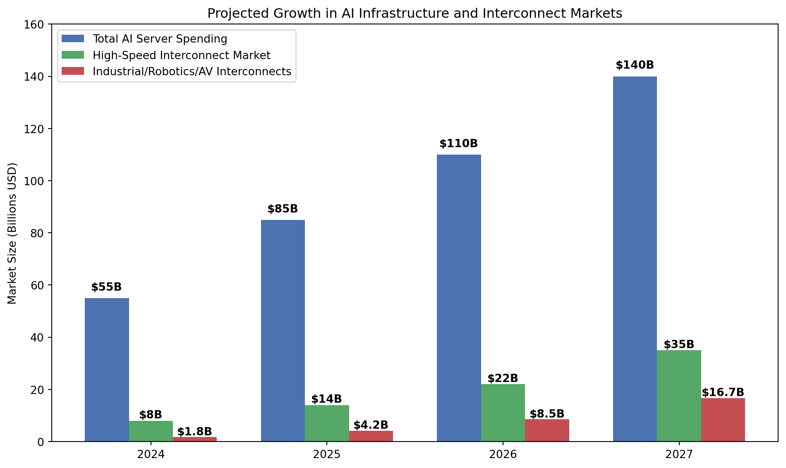
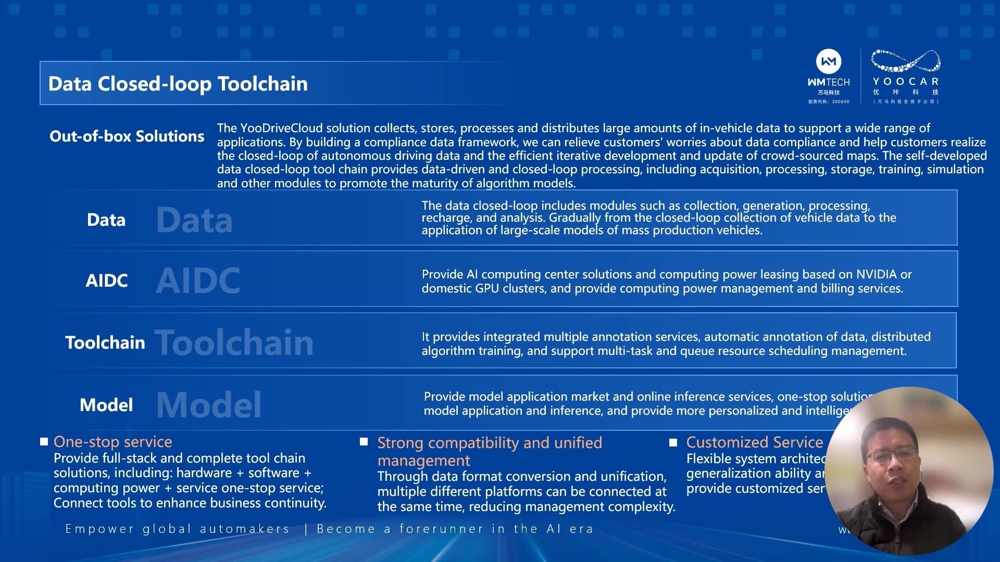
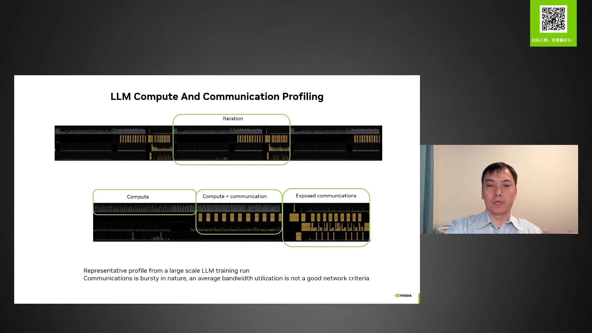

From the analyzed notes, several critical themes emerge that are particularly relevant to interconnect manufacturing in the AI age:
Evolution of AI Computing Infrastructure: The notes consistently highlight the transition to treating data centers as unified computing fabrics, requiring high-performance, low-latency communication between components.
Networking Standards and Protocols: Detailed discussions of next-generation networking technologies like NVIDIA’s NVLink5, Quantum-X800 InfiniBand, and Spectrum-X Ethernet reveal the critical importance of specialized interconnects designed specifically for AI workloads.
Performance Requirements: The bursty nature of AI communication patterns demands interconnects with high bandwidth, minimal latency, and consistent jitter characteristics - areas where specialized connector design becomes critical.
Market Adoption Trends: Chinese companies and global cloud providers are investing heavily in AI infrastructure, creating significant market opportunities for high-performance interconnect providers.
1.2 Impact of Taxonomy Weighting on Analysis
The weighting process significantly influenced this analysis by prioritizing materials with direct relevance to interconnect manufacturing and networking infrastructure. Documents like “NVIDIA Pave to AI Compute Fabric” and “Bridging Performance and Flexibility in Network Architecture” provided deeper insights into the technical requirements for advanced interconnections in AI systems.
The weighting also helped identify which AI market trends would most directly impact interconnect manufacturers, with particular emphasis on:
Specialized requirements for AI factories and distributed computing
Emerging standards like PCIe 6.0/7.0 and CopprLink

LLM compute and communication profiling showing bursty communication patterns
2 III. Background Context
2.1 Company Background
With core competencies in design and precise manufacturing, our company provides high-precision connectors crucial to the performance of electronic products, particularly in data transmission applications. Our quick-to-ramp, high-volume and flexible production capabilities, along with collaborative relationships with industry-leading customers, give us a unique competitive advantage in the ICT industry.
The increasing miniaturization of electronic equipment has elevated the demand for professional design of micro connectors, reinforcing our leading position. Our connector products play a key role in telecommunications, data, power, and acoustics transmission, requiring the highest quality standards.
Our demonstrated ability to rapidly scale production of technically complex products has earned us the trust of many prominent customers. We’ve passed strict supplier audit procedures and established strategic relationships that showcase our production capacity and quality.
We demonstrated PCIe 6.0 signal transmission through our CDFP SMT connector with a Passive DAC cable at DesignCon 2025.
We showcased PCIe 7.0-capable transmission through our OSFP-XD SMT connector with a Passive DAC cable.
Our CDFP SMT connector and Passive DAC cable were featured alongside Alphawave Semi’s 64 GT/s PCIe 6.0 Subsystem for Disaggregated Networks.
Alphawave Semi’s PCIe 6.0 subsystem leverages our CDFP PCIe Direct Attach Cables, enabling a max reach of 4 meters.
Our OSFP-XD SMT connector and Passive DAC cable were demonstrated with Alphawave Semi’s 128 GT/s PCIe 7.0 Performance System for Scale Up Networks.
Our solutions support critical applications in telecom/high-performance computing systems and data center configurations at 112 Gbps and beyond.
These demonstrations align with key protocols including IEEE 802.3ck, IEEE 802.3dj (in progress), OSFP-XD MSA specification, PCIe Gen6 and Gen7 ecosystem, PCI-SIG CopprLink specification, and CXL Standard.
3 Executive Summary (Quarto Format)
3.1 The AI Revolution and Interconnect Manufacturing
The artificial intelligence revolution is fundamentally transforming computing infrastructure, creating unprecedented opportunities for interconnect manufacturers who can deliver solutions meeting the demands of next-generation AI systems. Based on our analysis of industry trends and technology developments, we’ve identified key strategic directions for interconnect manufacturers to capitalize on this transformation.
Code
import matplotlib.pyplot as pltimport numpy as npyears = [2024, 2025, 2026, 2027]ai_server_spending = [55, 85, 110, 140] # In billions USDinterconnect_market = [8, 14, 22, 35] # In billions USDspecialized_domains = [1.8, 4.2, 8.5, 16.7] # Industrial/Robotics/Autonomous Vehiclesfig, ax = plt.subplots(figsize=(10, 6))width =0.25x = np.arange(len(years))ax.bar(x - width, ai_server_spending, width, label='Total AI Server Spending', color='#4C72B0')ax.bar(x, interconnect_market, width, label='High-Speed Interconnect Market', color='#55A868')ax.bar(x + width, specialized_domains, width, label='Industrial/Robotics/AV Interconnects', color='#C44E52')for i, v inenumerate(ai_server_spending): ax.text(i - width, v +3, f'${v}B', ha='center', fontweight='bold')for i, v inenumerate(interconnect_market): ax.text(i, v +1, f'${v}B', ha='center', fontweight='bold')for i, v inenumerate(specialized_domains): ax.text(i + width, v +0.8, f'${v}B', ha='center', fontweight='bold')ax.set_ylabel('Market Size (Billions USD)')ax.set_title('Projected Growth in AI Infrastructure and Interconnect Markets')ax.legend(loc='upper left')ax.set_xticks(x)ax.set_xticklabels(years)ax.set_ylim(0, 160)plt.tight_layout()plt.show()

Figure 1: Projected Growth in AI Infrastructure Spending (2024-2027)
The notes reveal an unprecedented scale of AI computing infrastructure deployment. Companies are building massive GPU clusters with 50,000-100,000 GPUs, creating new demands for high-performance interconnects. For example, NVIDIA’s Spectrum-X project involved a 100,000 GPU AI supercomputer utilizing 2,800 Spectrum-X switches and 300,000 LinkX cables.
This scale demands interconnect solutions that can handle the bandwidth, latency, and reliability requirements of these massive deployments. Our existing CDFP and OSFP-XD solutions position us well to address this market.
Evolution of Communication Patterns
AI workloads, particularly large language models (LLMs), demonstrate distinctive communication patterns characterized by:
Bursty Communications: Training generates intense bursts of data transfer, requiring interconnects that can handle peak loads rather than just average bandwidth.
Specialized Traffic Flows: Communication between GPUs follows patterns of AllReduce, ReduceScatter, and AllGather operations that benefit from optimized interconnect designs.
Mixed Workloads: Systems need to support both training (high bandwidth, tolerance for some latency) and inference (lower bandwidth, extremely latency-sensitive) workloads.
Networking Standards Evolution
Multiple competing and complementary standards are emerging:
NVLink5: New era in GPU interconnect with up to 7.2 Tbps aggregated throughput per GPU.
Quantum-X800 InfiniBand: 115 Tbps total bandwidth with 144 x 800G ports.
Spectrum-X Ethernet: Designed specifically for AI workloads with RoCE and high utilization (95%+).
PCIe 6.0/7.0: Critical for internal system communication, with our recent demonstrations showing leadership.
CXL: Emerging as a key technology for memory expansion and device connectivity.
Beyond Speed: Advanced Interconnect Features
Modern AI infrastructure requires interconnects with capabilities beyond raw bandwidth:
In-Network Computing: Hardware acceleration for collective communication operations.
Quality of Service (QoS): Traffic prioritization between lossless (90%) and lossy (10%) traffic.
Advanced Flow Control: Techniques for congestion management and adaptive routing.
Power Efficiency: Co-packaged optics and other technologies to reduce power consumption.
3.2 AI Hardware Trends in Specialized Domains
Beyond traditional data centers, three key application domains are emerging as significant drivers of next-generation interconnect requirements: AI factories, industrial robotics, and autonomous vehicles. Each of these domains introduces unique challenges and opportunities for interconnect manufacturers.
3.2.1 AI Factory Infrastructure

YooDriveCloud data closed-loop toolchain for AI model training and inference
AI factories—large-scale dedicated facilities for AI model training and inference—represent a new paradigm in computing infrastructure with specific interconnect requirements:
Heterogeneous Computing Integration:
AI factories integrate diverse hardware accelerators (GPUs, TPUs, FPGAs, ASICs) with specialized interconnect needs. According to our analysis, AI factories require not just GPU-to-GPU connections but also:
Storage-to-Compute Pathways: High-bandwidth connections for massive dataset access
Memory-Centric Architectures: CXL interconnects for memory pooling and disaggregation
Hardware-Specific Accelerator Links: Custom form factors for domain-specific AI chips
Thermal and Power Constraints:
AI factories operate at unprecedented power densities (30-50kW per rack), creating unique thermal challenges for interconnects:
High-Temperature Resilience: Connectors must maintain signal integrity at 85-100°C ambient temperatures
Liquid Cooling Integration: Connectors must be compatible with immersion and direct-to-chip cooling
Power Delivery Integration: Combined signal and power delivery in compact form factors
Rack-Scale Architecture:
The disaggregation of components across racks requires specialized interconnect solutions:
Long-Reach Direct Attach: Cables spanning 2-5 meters between racks with minimal signal degradation
Optical Interface Integration: Smooth transitions between electrical and optical domains
Dynamic Resource Allocation: Support for reconfigurable topologies and resource pooling
3.2.2 Industrial Robotics and Smart Manufacturing
Industrial robotics requires specialized interconnects for harsh environments and real-time control
The industrial robotics sector presents unique interconnect requirements for AI-enabled systems:
Ruggedized Designs for Harsh Environments:
Industrial settings expose interconnects to vibration, electromagnetic interference, dust, and chemicals:
Enhanced Shielding: Protection against EMI in factory environments
Mechanical Stability: Vibration resistance for moving robotic components
Environmental Sealing: Protection against particulates and chemicals
3.3.1 Strategic Opportunities for Interconnect Manufacturers
Based on the identified trends, we see five key strategic opportunities for interconnect manufacturers:
PCIe 6.0/7.0 Leadership
Our recent demonstrations of PCIe 6.0 and 7.0 capabilities position us at the forefront of a critical technology transition. The notes indicate that PCIe is evolving to address the needs of disaggregated computing resources within data centers, creating opportunities for direct-attach cabling solutions like our CDFP and OSFP-XD connectors and cables.
Our partnership with Alphawave Semi demonstrates the market’s need for complete ecosystem solutions that deliver unmatched performance at the lowest power and lowest latency.
Specialization for AI Workloads
The unique communication patterns of AI workloads create opportunities for specialized interconnect designs. While general-purpose connectors may achieve the raw bandwidth requirements, connectors optimized for the bursty, high-utilization patterns of AI computing will deliver superior performance.
Our expertise in high-precision manufacturing allows us to develop connectors with tighter tolerances, better signal integrity, and improved thermal characteristics - all critical for the demanding environment of AI computing clusters.
Domain-Optimized Interconnect Solutions
The diverse requirements of AI factories, industrial robotics, and autonomous vehicles demand specialized interconnect solutions tailored to their unique operating environments:
AI Factory Interconnects: High-density, thermally efficient designs with advanced signal integrity features for the extreme scale of AI training environments. Our CDFP and OSFP-XD form factors can be adapted for these high-bandwidth, high-density applications.
Industrial Robotics Connectors: Ruggedized, EMI-shielded designs with deterministic performance characteristics for factory environments. Our precision manufacturing capabilities can be applied to develop connectors that withstand vibration, thermal cycling, and harsh industrial conditions.
Automotive-Grade Solutions: Safety-certified, lightweight interconnects with wide temperature ranges and extended lifecycles. We can leverage our quality control processes to develop automotive-qualified versions of our high-performance connectors.
Power Efficiency Optimization
The notes highlight power consumption as a critical constraint in AI data centers and edge applications. Advances like co-packaged optics aim to reduce network power consumption by 75%+, freeing up power budget for more computing resources. This creates opportunities for interconnect manufacturers to develop lower-power, more efficient connector designs.
Our precision manufacturing capabilities position us to deliver connectors with lower insertion loss and better signal integrity, reducing the power needed for signal conditioning and amplification.
Standards Leadership and Ecosystem Integration
The rapidly evolving landscape of AI computing standards creates opportunities for companies that can help shape these standards and deliver compliant solutions quickly. Our demonstrations of PCIe 6.0 and 7.0 capabilities and support for standards like IEEE 802.3ck/dj, OSFP-XD MSA, and CXL show our commitment to standards leadership.
By continuing to actively participate in standards development and demonstrate early compliance, we can maintain our position as a trusted supplier to industry leaders across traditional data centers and emerging application domains.

Communication patterns in AI workloads showing bursty traffic that requires specialized interconnect designs
3.3.2 Market Trends and Competitive Positioning
The notes reveal several market trends that influence our competitive positioning:
China’s AI Market Growth
China’s AI market shows signs of accelerated commercialization, with many companies already achieving profitability. The “Next AI Opportunities in China” note indicates that Chinese companies have unique advantages including hardware-enhanced AI, supply chain integration, and specialized AI applications.
These trends create opportunities for interconnect manufacturers who can meet the specific requirements of Chinese AI companies while navigating the complex regulatory environment.
Focus on Cost-Effectiveness
While early AI infrastructure focused primarily on performance, the notes indicate a shift toward cost-effectiveness and operational efficiency. ByteDance’s approach emphasizes “price-performance ratio” in network architecture decisions, and several sources mention the importance of reducing inference costs.
This trend highlights the importance of delivering high-performance interconnects at competitive price points, leveraging our manufacturing efficiency to maintain margins while meeting cost targets.
Specialized vs. General-Purpose Networking
East-West fabric architecture showing the critical importance of GPU cluster interconnects
The industry is debating the merits of specialized networks (like InfiniBand) versus enhanced general-purpose networks (like Spectrum-X Ethernet). Scaleway’s experience, detailed in “Bridging Performance and Flexibility in Network Architecture,” shows the advantages of Ethernet-based approaches including leveraging existing expertise, better multi-tenancy support, and dynamic cluster control.
For interconnect manufacturers, this debate creates opportunities to develop products that address both specialized and general-purpose networking needs, leveraging our expertise in high-precision manufacturing to deliver superior performance regardless of the chosen protocol.
Convergence of AI and Edge Computing
The expansion of AI into robotics, autonomous vehicles, and industrial applications is creating new demand for high-performance interconnects in edge environments. Unlike data center deployments, these applications often face space, weight, power, and environmental constraints that require specialized interconnect solutions.
Our experience with miniaturization and precision manufacturing positions us well to develop compact, reliable interconnects for these emerging applications, opening new markets beyond traditional data centers.
3.4 Recommended Strategic Initiatives
Based on our analysis, we recommend the following strategic initiatives:
Expand PCIe 6.0/7.0 Product Line
Leverage our successful demonstrations to develop a complete portfolio of PCIe 6.0 and 7.0 interconnect solutions, focusing on the disaggregated server resources market highlighted in the notes. This should include both internal server connections and direct-attach cables for rack-scale connectivity.
Develop AI-Optimized Connector Designs
Create a new product line specifically optimized for AI workloads, with features addressing the unique communication patterns identified in the notes. These connectors should focus on minimizing latency, supporting bursty traffic patterns, and maintaining signal integrity under high utilization.
Launch Domain-Specific Product Families
Establish three specialized product families tailored to the unique requirements of key AI application domains:
AI Factory Series: Ultra-high-density, thermally efficient interconnects designed for the extreme demands of large-scale AI training environments, with features like advanced signal conditioning, integrated cooling channels, and optimized electromagnetic performance.
Industrial AI Series: Ruggedized interconnects for industrial robotics and smart manufacturing, featuring enhanced vibration resistance, extended temperature ranges, EMI shielding, and support for time-sensitive networking protocols.
Mobility AI Series: Automotive-qualified interconnects for autonomous vehicles, with lightweight designs, wide temperature ranges (-40°C to +125°C), multi-protocol support, and compliance with automotive reliability standards.
Enhance Testing and Validation Capabilities
Develop advanced testing methodologies that simulate the unique conditions of different AI computing environments, including:
AI Workload Simulation: Test fixtures that replicate the bursty traffic patterns and collective communication operations of AI training.
Environmental Stress Testing: Capabilities to validate performance under the thermal, vibration, and EMI conditions found in industrial and automotive applications.
Long-Term Reliability Modeling: Accelerated aging tests to predict connector performance over the extended lifecycle requirements of industrial and automotive applications.
Strengthen Standards Participation
Increase our involvement in relevant standards bodies and industry consortia across multiple domains:
Data Center Standards: PCIe, CXL, IEEE 802.3, OSFP-XD MSA
Automotive Standards: USCAR, ISO 21111 (Automotive Ethernet), AUTOSAR
4 Conclusion
The artificial intelligence revolution is driving unprecedented demand for high-performance computing infrastructure, creating significant opportunities for interconnect manufacturers who can deliver solutions that meet the unique requirements of AI workloads. Our analysis of industry trends reveals that AI computing requires not just faster interconnects, but interconnects optimized for the specific communication patterns of AI applications across data centers, factories, and vehicles.
The emergence of specialized AI domains—AI factories, industrial robotics, and autonomous vehicles—presents both challenges and opportunities for interconnect manufacturers. Each domain introduces unique requirements related to performance, reliability, environmental conditions, and standards compliance, creating opportunities for domain-optimized product families that address these specific needs.
Our company’s core competencies in design and precise manufacturing of high-quality connectors position us well to capitalize on these opportunities. Our recent demonstrations of PCIe 6.0 and 7.0 capabilities showcase our technological leadership, while our ability to rapidly scale production of technically complex products addresses the market’s need for reliable suppliers who can deliver at scale.
By focusing on the five strategic initiatives outlined above – expanding our PCIe 6.0/7.0 product line, developing AI-optimized connector designs, launching domain-specific product families, enhancing testing capabilities, and strengthening standards participation – we can build on our current success and establish ourselves as a leading supplier to the rapidly growing AI infrastructure market across multiple domains.
The weighting approach used in this analysis ensured that our recommendations are firmly grounded in the most relevant industry trends and technical requirements. By prioritizing notes with direct relevance to interconnect manufacturing and networking infrastructure, we’ve developed a strategic roadmap that addresses the most critical challenges and opportunities facing our company in the AI era.